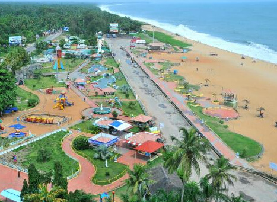

Jatayu Earth's Center

Jatayu Earth Center, also known as Jatayu Nature Park or Jatayu Rock, is a park and tourism centre at Chadayamangalam in Kollam district of Kerala. It stands at an altitude of 350m (1200ft) above the mean sea level.
Jatayu Nature Park holds the distinction of having the world’s largest bird sculpture, which is of Jatayu.
The sculpture measures (200 feet (61 m) long, 150 feet (46 m) wide, 70 feet (21 m) in height and occupies 15,000 square feet (1,400 m2) of floor area). It was sculpted by Rajiv Anchal.
Spanning over 65 acres across four hills, this is the State’s first ever BOT (Build-Operate-Transfer) tourism.
The monumental statue of Jatayu resting high up the hill catches your attention even from afar on your way to Chadayamangalam in Kollam district. Jatayu is a legendary bird from the Indian epic Ramayana.
You can reach the hilltop using a cable car. A multitude of experiences await the traveller in Jatayu Rock. One such is the museum and the 6D theatre inside the sculpture. You can even have a hele-taxi experience from here!
How to Get Here
Chadayamangalam is located on Main Central (MC) Road, connecting Angamaly (Ernakulam district) and Kesavadasapuram (Thiruvananthapuram district). Buses are available from major bus stations in the state. Nearest Airport: Trivandrum International Airport is about 52 kms Nearest Railway Stations: Kollam Junction, about 35 kms and Thiruvananthapuram Central about 55 kms
Thangassery Light House

The cylindrical lighthouse tower is painted in catchy red and white oblique bands. You can bear witness to the glorious sun setting over the Arabian Sea, as well as the rising moon as you drive down on the Lighthouse road. The Thangassery beach Lighthouse was built in 1902 to guide fishermen and sailors along the reef-riddled coastal waters. Its beacon can be seen up to 20km out at sea. History has it that prior to construction of the lighthouse, the British East India Company had installed a tower with an oil lamp.
Visitors are allowed to climb to the top of the 140feet high Thangassery lighthouse tower during 10am to 5pm. The tiresome 200steps climb up the spiraling staircase to the top of the tower is more than made up for by the spectacular 360 degrees panoramic view of the Arabian Sea and splendor of the backwaters and Kollam city.
This lighthouse is the tallest lighthouse on the coast of Kerala and the splendid views from the tower draw tourists like a magnet. The enchanting beauty and the calm silence of the secluded area around the lighthouse are also great for a little family picnic, or just to spend some quality time alone with only our thoughts to keep us company.
How to Get Here
The Thangassery Light House is easily accessible since it is located in a good area, just 7.9 kilometres away from the centre of the town of Kollam. One can quickly reach the place by hiring a cab or by using means of public transport; though the former is the more advisable option. The lighthouse is also located near the Kollam Beach, and one can even choose to walk to the lighthouse from the beach.
Kollam Beach
An array of beach activities attracts huge flocks of tourists throughout the year to thepristine Kollam Beach. The panoramic visuals of the Arabian Sea are enchanting. A port city and one time bustling harbour for Chinese ships and trade, Kollam Beach is home to Chinese fishing nets, Chinese water pots and sampan-like boats even to this day. Go over for a cultural and spiritual joyride that shall stay with you forever.
Kollam Beach is the first 'Beach Wedding Destination' in Kerala.
The beach also features a park of international standard, the Mahatma Gandhi Park, which was inaugurated on 1 January 1961 by the then Vice President of India, Zakir Hussain. Kollam beach is one among the few beaches in Kerala with a lifeguard outpost. Lifeguards were stationed at the beach from 2005. As of July 2015 Kovalam, Kollam is one among the three beaches in south Kerala with lifeguard outposts.
How to Get Here
Nearest railway station: Kollam Junction Railway Station is about 4 km Nearest airport: Trivandrum International Airport is about 68 km